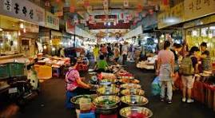
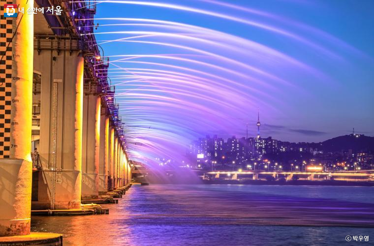

shopping center
Visit to Myeongdong Cathedral for some peaceful reflection.
and Myeongdong Underground Shopping Center.
try Korean street food.
Gwangjang Market
Head to Gwangjang Market for lunch, where you can try a variety of Korean street food. It's a great spot to sample local flavors in an authentic setting.
Banpo Bridge Rainbow Fountain Show
Stay for the Rainbow Fountain Show at Banpo Bridge, which typically starts at 21:30. Enjoy the spectacular water and light display.
Sunset Picnic at Banpo Hangang Park
Set up a picnic spot along the Han River to watch the sunset. You can bring snacks from Mangwon Market or purchase some from vendors in the park.
Banpo Bridge Rainbow Fountain Show
Stay for the Rainbow Fountain Show at Banpo Bridge, which typically starts at 21:30. Enjoy the spectacular water and light display.
